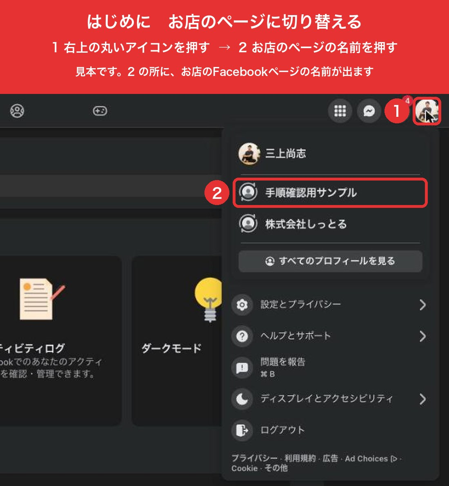
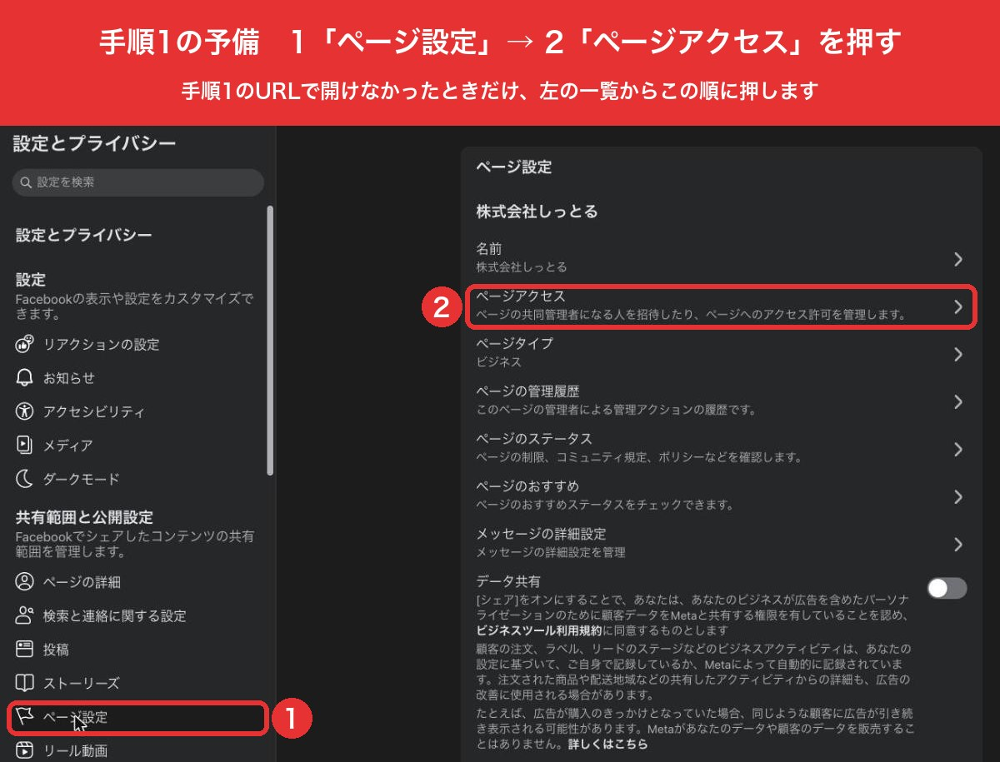
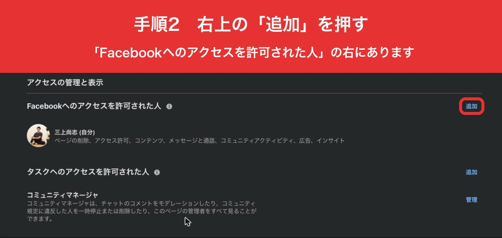
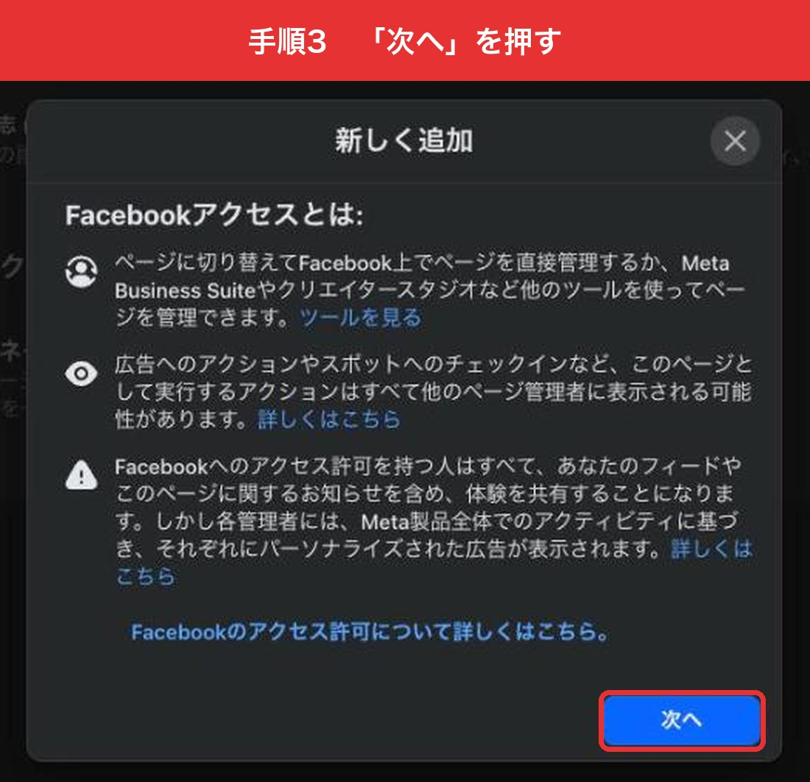
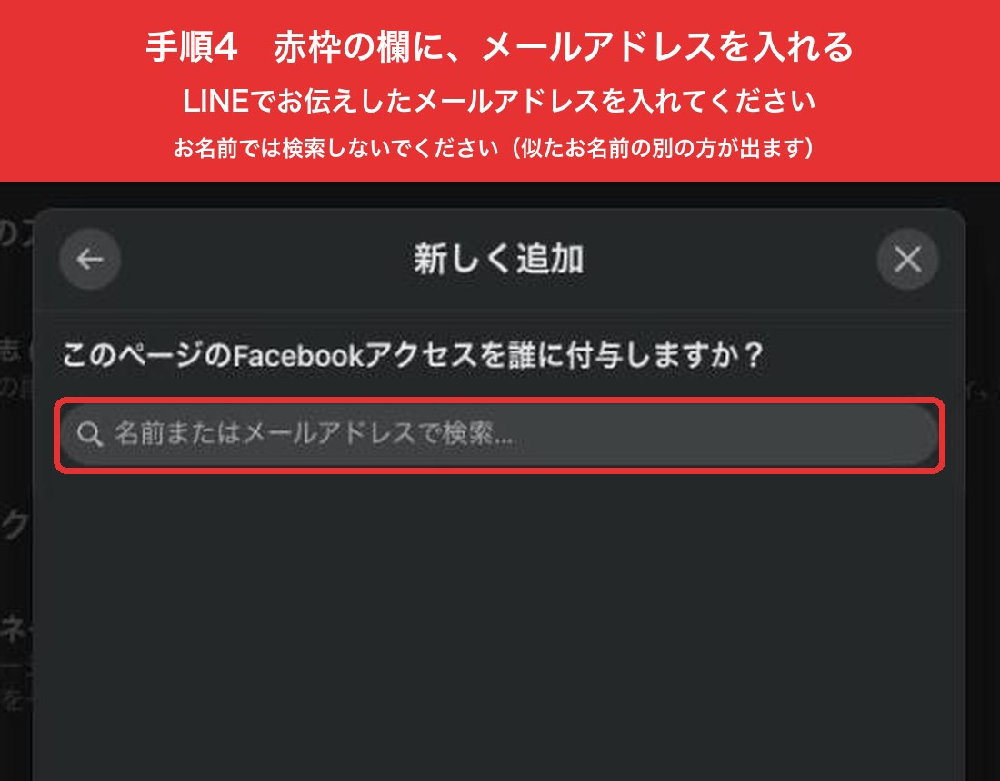
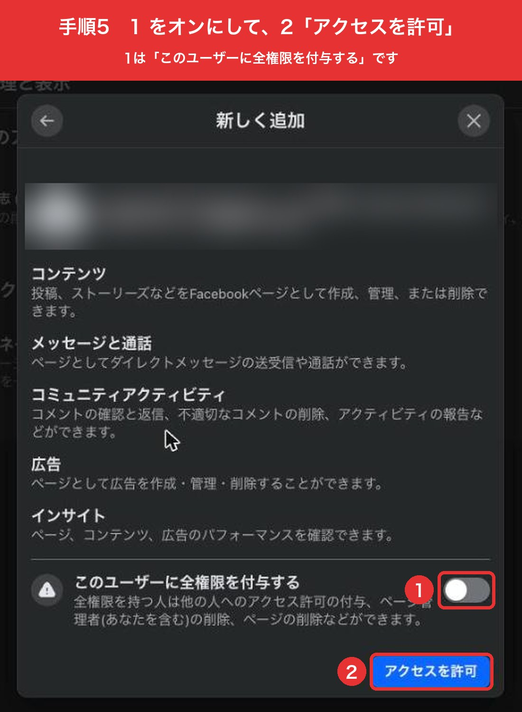

ご用意いただくもの
必要なもの
- パソコン
- お店のFacebookページを管理しているFacebookアカウント（ログインできる状態）
- しっとるからLINEでお伝えしたメールアドレス（手順4で使います）
しっとるにお伝えいただかないもの
- Facebookのパスワード
- スマホやメールに届く確認の番号（認証コード）
はじめにお店のページに切り替える
- パソコンで
https://www.facebook.com/を開きます。 - 右上の丸いアイコンを押します。
- お店のFacebookページの名前を押します。
この切り替えをしないと、次の手順の画面が出ません。右上のアイコンがお店のページのものに変われば、切り替わっています。

手順1「ページアクセス」を開く
こちらを開きます。
https://www.facebook.com/settings/?tab=profile_access
「Facebookへのアクセスを許可された人」と書かれた画面が開けば、手順2へ進みます。
開かないとき
画面の左の一覧から「ページ設定」を押し、次に「ページアクセス」を押します。

手順2「追加」を押す
「Facebookへのアクセスを許可された人」の右にある「追加」を押します。
「追加」は2つあります。上の「追加」を押してください。

手順3「次へ」を押す
「新しく追加」という説明の画面が出ます。右下の「次へ」を押します。

手順4メールアドレスで検索する
- 検索の欄に、しっとるからLINEでお伝えしたメールアドレスを入れます。
- 「三上尚志」と出たら、それを押します。
お名前では検索しないでください
お名前で検索すると、似たお名前の別の方が何人も出てきます。まちがえて別の方に権限を渡さないよう、必ずメールアドレスで検索してください。

手順5全権限をオンにして許可する
- 「このユーザーに全権限を付与する」の右のスイッチを押して、オンにします。
- 右下の「アクセスを許可」を押します。
- パスワードを聞かれたら、ご自身のFacebookのパスワードを入れます。

なぜ個人の名前を追加するのか
Facebookページの権限は、会社ではなく個人のアカウントに付ける仕組みです。そのため、株式会社しっとる代表の三上を追加していただきます。ご契約が終わったら、同じ画面から外せます。
終わったら
LINEで「追加しました」とお知らせください。しっとるで確認して、続きの設定を進めます。
うまくいかないとき
| 起きたこと | していただくこと |
|---|---|
| 手順1の画面に「追加」が無く、「全権限を持っている人」「管理」と出ている | そこで止めて、その画面の写真をLINEで送ってください。別の方法をご案内します |
| 手順4で「三上尚志」が出てこない | そこで止めて、LINEでお知らせください |
| 右上のアイコンを押しても、お店のページの名前が出ない | 「すべてのプロフィールを見る」を押して探してください。それでも無ければ、その画面の写真を送ってください |
| 画面が見本と違う | そこで止めて、その画面の写真を送ってください |